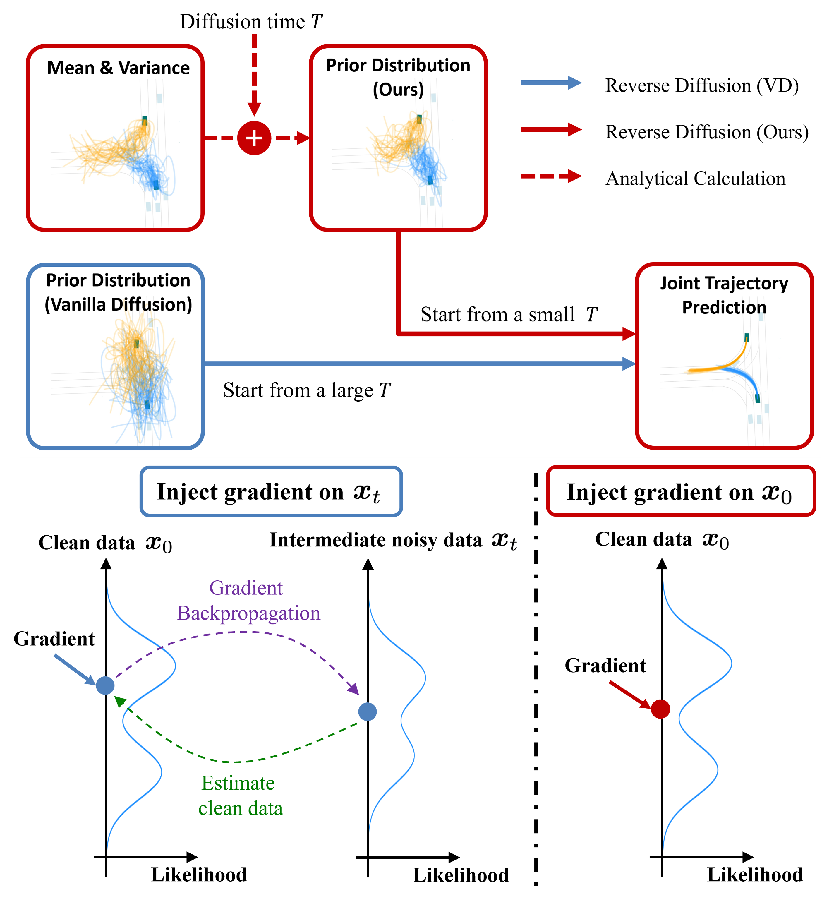

|
Yixiao Wang I'm a third-year PhD student at UC Berkeley, honored to be advised by Professor Masayoshi Tomizuka and affiliated with Berkeley Artificial Intelligence Research (BAIR). |
{kind=link}
News
|
ResearchI am passionate about robotics, generative AI (with a focus on diffusion models), reasoning, and planning. My research is centered on advancing generalization capabilities in robot learning, with an emphasis on scaling through improvements in data, algorithms, and system design. I am always open to collaboration and discussions on exciting research projects. Please feel free to reach out! |
|
|
Generalization Capability for Imitation Learning
Yixiao Wang In Progress, 2025 arXiv |
|
|
VER: Vision Expert Transformer for Robot Learning via Foundation Distillation and Dynamic Routing
Yixiao Wang, Mingxiao Huo, Zhixuan Liang, Yushi Du, Lingfeng Sun, Haotian Lin, Jinghuan Shang, Chensheng Peng, Mohit Bansal, Mingyu Ding, Masayoshi Tomizuka Under Review, 2025 |
|
|
Sparse Diffusion Policy: A Sparse, Reusable, and Flexible Policy for Robot Learning
Yixiao Wang*, Yifei Zhang*, Mingxiao Huo*, Ran Tian, Xiang Zhang, Yichen Xie, Chenfeng Xu, Pengliang Ji, Wei Zhan, Mingyu Ding, Masayoshi Tomizuka CoRL, 2024 project page / arXiv |
|

|
OptTrajDiff: Optimizing Diffusion Models for Joint Trajectory Prediction and Controllable Generation
Yixiao Wang, Chen Tang, Lingfeng Sun, Simone Rossi, Yichen Xie, Chensheng Peng, Thomas Hannagan, Stefano Sabatini, Nicola Poerio, Masayoshi Tomizuka, Wei Zhan ECCV, 2024 project page / arXiv |
|
|
DexDiffuser: Interaction-aware Diffusion Planning for Adaptive Dexterous Manipulation
Zhixuan Liang, Yao Mu, Yixiao Wang, Tianxing Chen, Wenqi Shao, Wei Zhan, Masayoshi Tomizuka, Ping Luo, Mingyu Ding CVPR, 2025 project page / paper |
|
|
DeSiRe-GS: 4D Street Gaussians for Static-Dynamic Decomposition and Surface Reconstruction for Urban Driving Scenes
Chensheng Peng*, Chengwei Zhang*, Yixiao Wang, Chenfeng Xu, Yichen Xie, Wenzhao Zheng, Kurt Keutzer, Masayoshi Tomizuka, Wei Zhan CVPR, 2025 github / arXiv |
|
|
Physics-Aware Robotic Palletization with Online Masking Inference
Tianqi Zhang, Zheng Wu, Yuxin Chen, Yixiao Wang, Boyuan Liang, Scott Moura, Masayoshi Tomizuka, Mingyu Ding, Wei Zhan ICRA, 2025 (Best Paper Award Finalist) Paper |

|
Joint Pedestrian Trajectory Prediction through Posterior Sampling
Haotian Lin, Yixiao Wang†, Mingxiao Huo, Chensheng Peng, Zhiyuan Liu, Masayoshi Tomizuka IROS, 2024 arXiv |
|
|
Imagined Potential Games: A Framework for Simulating, Learning and Evaluating Interactive Behaviors
Lingfeng Sun, Yixiao Wang, Pin-Yun Hung, Changhao Wang, Xiang Zhang, Zhuo Xu, Masayoshi Tomizuka Under Review, 2025 project page / arXiv |
|
|
Composition Vision-Language Understanding via Segment and Depth Anything Model
Mingxiao Huo, Pengliang Ji, Haotian Lin, Junchen Liu, Yixiao Wang, Yijun Chen arXiv,2024 arXiv |
|
Thank Jon Barron for sharing his website's source code. |